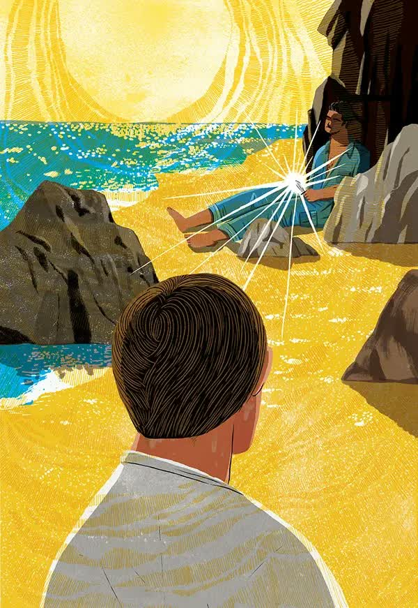

The Stranger by Albert Camus

To be honest, my impressions were rather mixed, since this is the first time I have read a work of this kind. I was not familiar with Camus’s philosophical ideas before reading him, and his main philosophical current is absurdism. The events unfold in the city of Algiers, the capital of Algeria, at a time when Algeria was still a French colony. We have Monsieur Meursault, whose first name is not revealed, who is just an office clerk there. He is living his quiet little life, and then he receives the news that his mother has died. His mother had been living in a home for the aged about eighty kilometers from Algiers for a couple of years already because, as he says, he did not have enough money to support her, because she needed a nurse, and because they simply had nothing to say to each other. So he sent her there so that she would not be alone and so that she would not get in his way either. He visited her rarely. He gets the news of her death, Monsieur Meursault buys a bus ticket, has breakfast at Celeste’s cafe, and sets off. Upon arrival, he is met by the director of the home, who offers him his condolences. He tells him that he may spend the night with his mother while the coffin is still open. Meursault agrees: “All right.” The night passes. Other residents of the home who knew his mother sit there with him, but he hardly speaks to them. Only to the caretaker, perhaps, who offers him coffee, and he, in return, a cigarette. During this short conversation, the caretaker asks about his mother’s age, to which Meursault replies, “She was somewhere in her sixties,” because he did not know exactly how old she was. Neither that night nor at the funeral does Meursault shed a single tear or show grief or sorrow. And that seems strange to everyone. Right after the funeral he leaves for Algiers without even visiting his mother’s grave. There he meets Marie, quite a beautiful girl, and they go to the movies, to the swimming pool, and then to his place. In short, she is his girl, or his lover, call it whatever you want.
So as not to retell the whole text, I will try to put it briefly and without details: Meursault had a neighbor named Raymond, who beat his mistress up, and this happened after Meursault’s mother had died. The other neighbors called the police, and Raymond needed someone who would confirm that his mistress had cheated on him, and that was why he had beaten her. Meursault agrees, because he does not care. And this is the key point: Meursault is indifferent to almost everything. He can feel tired, in a bad mood, hot, cold. He feels the physical world, but he does not care about the non-material one. He does not care about other people’s emotions or feelings. They are simply irrelevant to him. After that, Raymond invites Meursault and Marie to visit his friend Masson, who lives by the sea. On the way there they run into two Arabs, one of whom is the brother of Raymond’s mistress, the one he had beaten, as we remember. But when they see Raymond, the two Arabs do not react. Once they arrive at Masson’s house, they get acquainted, swim in the sea, eat fried fish, and then the three men go out for a walk. During the walk they run into those same two Arabs, who supposedly had paid them no attention before. A fight breaks out, and Raymond gets his arm and lip cut. Meursault does not take part in the fight. After they return home, Raymond says he is all right, and he and Meursault go out for another walk. On the beach they run into those Arabs again, and again they do not react to them in any way. They sit down near them, and Raymond says: “So, Meursault, shall we finish him?” Raymond says, pulling out a gun. Meursault understands that if he simply says “no,” Raymond will start shooting, and he does not want to kill a man just like that, so he replies: “Let’s wait. If they start insulting you, then you can shoot.” Then Meursault persuades Raymond to hand him the weapon so that he will not kill anyone, saying, “If they attack, I’ll fire.” Raymond agrees. No fight happens, and they simply go back. Raymond goes up the steps to the house, and Meursault says that he does not want to talk to the women and would rather take another walk, so he heads back alone. It is hot outside. He approaches the spring, and an Arab is lying there, about ten meters away. His face is in the shade, but his body is under the sun. Meursault takes aim, the sun is shining in his eyes. And then, bam, the irreversible happens. Bam. Bam. Bam. Bam. Meursault puts four more bullets into him.
Then Meursault is put on trial. The prosecutor wants the maximum possible sentence for premeditated murder, but the case begins to turn in a different direction. The prosecutor starts approaching the case from the angle of Meursault’s heartlessness even before the murder. He says that Meursault has no feelings and that such a person has no place in our society. He sent his mother to a home for the aged, did not shed a single tear at the funeral, did not show the slightest bitterness or grief, did not display the smallest emotion, and, on top of that, did not even know how old his mother was. To make matters worse, he did not even stay a day after the funeral to visit her grave and mourn. Instead, he returned to Algiers, went to the swimming pool and the movies with Marie, and then even brought her home. Meursault’s defense was not particularly strong, and it was obvious how heavily the prosecutor was pressing. And here we see the second key point: Meursault, one could say, did not really participate in the trial. He was a stranger in the courtroom. It all reached the point of absurdity: he was being judged not for murder, but for failing to conform to social standards. They hardly gave him a voice, and in the end, when the court sentenced him to death by guillotine, and he was asked, “Do you have anything to say, Monsieur Meursault?” he answered, “No.” He was taken to a prison cell with a barred ceiling, and he lay there, looked at the evening sky turning into night, and reflected on what had happened. He did not participate in his own trial. He was detached from it. Officially, he was being judged for murder, but in reality, for his uniqueness, for not being like everyone else. Absurd. He is simply like a man watching everything from the outside, completely detached, not part of this society. It had been the same before as well: at his mother’s funeral everyone was grieving and crying, while he simply sat there, understanding that it had happened and that nothing could be done, because all of us will die one day. When Raymond offered to be his friend, Meursault said he did not care what Raymond called it. Society goes on living its life, while he is outside it. He is not there. He is not there. Before the execution, a priest comes to see him. Twice the priest tries to enter, but Meursault refuses to let him in. The third time, he finally allows it. The priest tells him that before death he must, so to speak, atone for his sins before God. Not before the law, not before everyone else, but before God. That is what matters most, that he must cleanse his sins. Meursault explains that he does not believe in God and does not need any of that. At some point Meursault lunges at the priest and begins to explain aggressively what he feels.
Passage from the end of the book: "With death so near, Mother must have felt like someone on the brink of freedom, ready to start life all over again. No one, no one in the world had any right to weep for her. And I, too, felt ready to start life all over again. It was as if that great rush of anger had washed me clean, emptied me of hope, and, gazing up at the dark sky spangled with its signs and stars, for the first time, the first, I laid my heart open to the benign indifference of the universe. To feel it so like myself, indeed, so brotherly, made me realize that I’d been happy, and that I was happy still. For all to be accomplished, for me to feel less lonely, all that remained to hope was that on the day of my execution there should be a huge crowd of spectators and that they should greet me with howls of execration." What we encounter in Monsieur Meursault is an absurd man by nature. He says that he had already been happy all along, but before that it was not really visible in a way that ordinary people like us, who are not used to seeing something like this, would understand. We have established certain frames for happiness. What does that even mean? That this has to look a certain way, show itself from a certain angle, so that we understand that you are happy. That you are grieving. That you loved. Well then, who the hell are we to judge anyone? Why should we? Who the hell are we to decide for someone else whether what they are doing is right or wrong? That is absurd, and that is what shows why there are strangers in this world. Because this world is absurd. Society finds it easier to forgive a crime than it does difference. Upd: I spent a ton of time writing this, but it was worth it. The range of emotions you experience while reading and reflecting is enormous, and writing all of this down helps calm the storm in my head. This article ended up being longer than I expected. It may seem like I gave too many details, and that you won’t be interested in reading the book because you already know what happens. But! I still strongly recommend reading Camus’s masterpiece. Every single word in it matters and helps you understand the characters better. I would even call this article a “brief overview” of the book. Thanks for reading. Have a good one!